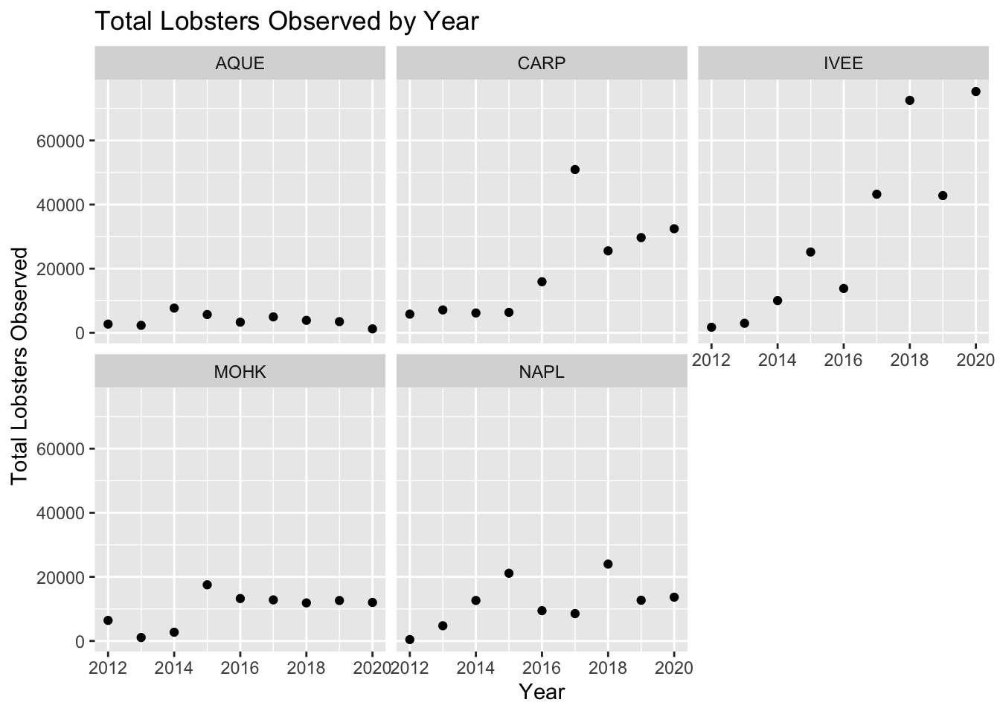
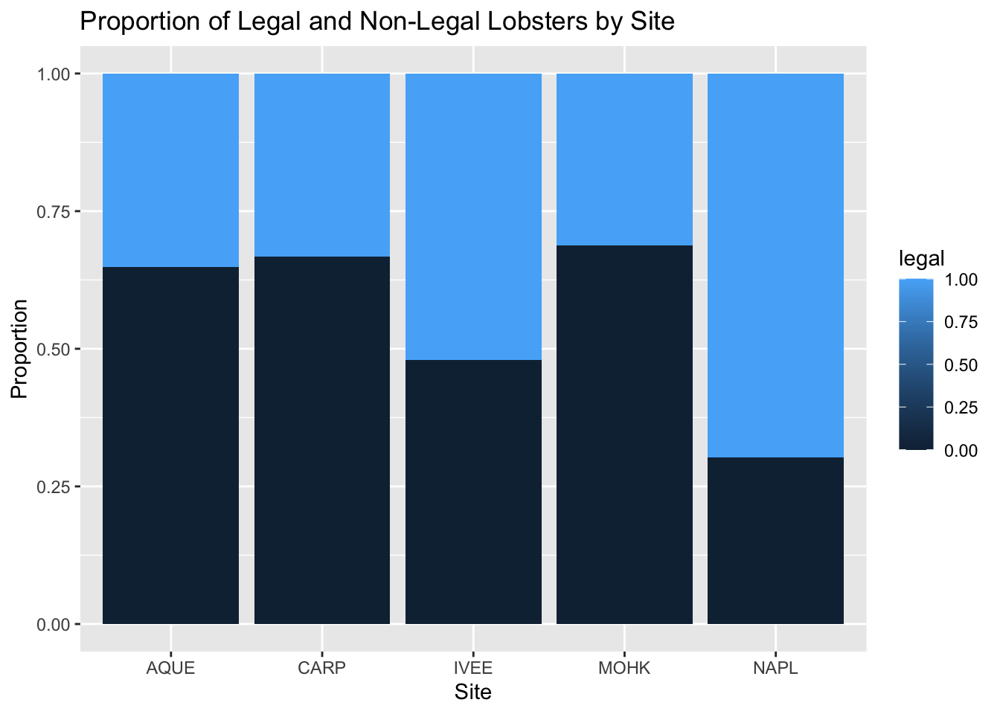

#Load Libraries
library(tidyverse)
library(here)
library(janitor)lobster_exploration
#Task 2
#Read Data
lobsters <- read_csv(here("data","Lobster_Abundance_All_Years_20210412.csv"), na = c("-99999", "")) %>%
clean_names() %>% # Convert column names to lower snake case
uncount(count) #Convert the data from frequency to case forma:each original row is duplicated as many times as indicated by its corresponding count (column "count").#Creating a summary table that finds the total counts and mean carapace lengths of lobsters observed in the dataset by site and year.
lobster_summary<-lobsters %>%
group_by(site,year) %>%
summarize(total_counts=sum(size_mm,na.rm=TRUE),
average_size_mm= mean(size_mm, na.rm = TRUE))
print(lobster_summary)# A tibble: 45 × 4
# Groups: site [5]
site year total_counts average_size_mm
<chr> <dbl> <dbl> <dbl>
1 AQUE 2012 2698 71
2 AQUE 2013 2308 72.1
3 AQUE 2014 7692 76.9
4 AQUE 2015 5682 68.5
5 AQUE 2016 3297 68.7
6 AQUE 2017 4951 73.9
7 AQUE 2018 3871. 71.7
8 AQUE 2019 3468 75.4
9 AQUE 2020 1208 75.5
10 CARP 2012 5800 74.4
# ℹ 35 more rows#Plotting the data
ggplot(lobster_summary, aes(x=year,y=total_counts))+geom_point()+facet_wrap(~ site) +
labs(
title = "Total Lobsters Observed by Year",
x = "Year",
y = "Total Lobsters Observed") 
#Subset of data from 2020
lobster_2020<-lobsters%>%
dplyr::filter(year== 2020)
# Assigning legal status [legal=1, not legal=0]
lobster_2020$legal <- NA
for (i in seq_along(lobster_2020$size_mm)) {
if (lobster_2020$size_mm[i] > 79.76) {
lobster_2020$legal[i] <- 1
}
else {
lobster_2020$legal[i] <- 0
}
}
print(lobster_2020)# A tibble: 1,760 × 10
year month date site transect replicate size_mm num_ao area legal
<dbl> <dbl> <date> <chr> <dbl> <chr> <dbl> <dbl> <dbl> <dbl>
1 2020 8 2020-08-24 CARP 1 A 52 0 300 0
2 2020 8 2020-08-24 CARP 1 A 68 0 300 0
3 2020 8 2020-08-24 CARP 1 A 70 0 300 0
4 2020 8 2020-08-24 CARP 1 A 72 0 300 0
5 2020 8 2020-08-24 CARP 1 A 72 0 300 0
6 2020 8 2020-08-24 CARP 1 A 73 0 300 0
7 2020 8 2020-08-24 CARP 1 A 75 0 300 0
8 2020 8 2020-08-24 CARP 1 A 75 0 300 0
9 2020 8 2020-08-24 CARP 1 A 75 0 300 0
10 2020 8 2020-08-24 CARP 1 A 76 0 300 0
# ℹ 1,750 more rows#Creating a summary table that finds the total counts and mean carapace lengths of lobsters observed in the dataset by site and year.
lobster2020_summary<-lobster_2020 %>%
group_by(site,legal) %>%
summarize(total_counts=sum(size_mm,na.rm=TRUE))
print(lobster2020_summary)# A tibble: 10 × 3
# Groups: site [5]
site legal total_counts
<chr> <dbl> <dbl>
1 AQUE 0 783
2 AQUE 1 425
3 CARP 0 21673
4 CARP 1 10785
5 IVEE 0 36089
6 IVEE 1 39176
7 MOHK 0 8262
8 MOHK 1 3755
9 NAPL 0 4133
10 NAPL 1 9532# Creating a stacked column plot
ggplot(lobster2020_summary, aes(x = site, y = total_counts, fill = legal)) +
geom_col(position = "fill") +
labs(title = "Proportion of Legal and Non-Legal Lobsters by Site",
x = "Site",
y = "Proportion") 
#Site NAPL and Ivee had the largest number of legal lobster. This can be attributed to several key factors associated with MPAs, protection from fishing and improvement in the habitat.#Task 3
lobsters_a <- lobsters %>%
filter(site %in% c("IVEE", "CARP", "NAP"))
print(lobsters_a)# A tibble: 6,230 × 9
year month date site transect replicate size_mm num_ao area
<dbl> <dbl> <date> <chr> <dbl> <chr> <dbl> <dbl> <dbl>
1 2012 8 2012-08-20 IVEE 3 A 70 0 300
2 2012 8 2012-08-20 IVEE 3 B 60 0 300
3 2012 8 2012-08-20 IVEE 3 B 65 0 300
4 2012 8 2012-08-20 IVEE 3 B 70 0 300
5 2012 8 2012-08-20 IVEE 3 B 85 0 300
6 2012 8 2012-08-20 IVEE 3 C 60 0 300
7 2012 8 2012-08-20 IVEE 3 C 65 0 300
8 2012 8 2012-08-20 IVEE 3 C 67 0 300
9 2012 8 2012-08-20 IVEE 3 D 70 0 300
10 2012 8 2012-08-20 IVEE 4 B 85 0 300
# ℹ 6,220 more rowslobsters_b <- lobsters %>%
filter(month==8)
print(lobsters_b)# A tibble: 9,281 × 9
year month date site transect replicate size_mm num_ao area
<dbl> <dbl> <date> <chr> <dbl> <chr> <dbl> <dbl> <dbl>
1 2012 8 2012-08-20 IVEE 3 A 70 0 300
2 2012 8 2012-08-20 IVEE 3 B 60 0 300
3 2012 8 2012-08-20 IVEE 3 B 65 0 300
4 2012 8 2012-08-20 IVEE 3 B 70 0 300
5 2012 8 2012-08-20 IVEE 3 B 85 0 300
6 2012 8 2012-08-20 IVEE 3 C 60 0 300
7 2012 8 2012-08-20 IVEE 3 C 65 0 300
8 2012 8 2012-08-20 IVEE 3 C 67 0 300
9 2012 8 2012-08-20 IVEE 3 D 70 0 300
10 2012 8 2012-08-20 IVEE 4 B 85 0 300
# ℹ 9,271 more rowslobsters_c <- lobsters %>%
filter(site %in% c("AQUE"))
print(lobsters_c)# A tibble: 484 × 9
year month date site transect replicate size_mm num_ao area
<dbl> <dbl> <date> <chr> <dbl> <chr> <dbl> <dbl> <dbl>
1 2012 8 2012-08-24 AQUE 1 C 55 0 300
2 2012 8 2012-08-24 AQUE 1 D 58 0 300
3 2012 8 2012-08-24 AQUE 1 D 63 0 300
4 2012 8 2012-08-24 AQUE 1 D 70 0 300
5 2012 8 2012-08-24 AQUE 1 D 75 0 300
6 2012 8 2012-08-24 AQUE 2 A 72 0 300
7 2012 8 2012-08-24 AQUE 2 B 57 0 300
8 2012 8 2012-08-24 AQUE 2 B 60 0 300
9 2012 8 2012-08-24 AQUE 2 B 62 0 300
10 2012 8 2012-08-24 AQUE 2 B 64 0 300
# ℹ 474 more rowslobsters_d<- lobsters %>%
filter(site != "NAPL")
print(lobsters_d)# A tibble: 8,035 × 9
year month date site transect replicate size_mm num_ao area
<dbl> <dbl> <date> <chr> <dbl> <chr> <dbl> <dbl> <dbl>
1 2012 8 2012-08-20 IVEE 3 A 70 0 300
2 2012 8 2012-08-20 IVEE 3 B 60 0 300
3 2012 8 2012-08-20 IVEE 3 B 65 0 300
4 2012 8 2012-08-20 IVEE 3 B 70 0 300
5 2012 8 2012-08-20 IVEE 3 B 85 0 300
6 2012 8 2012-08-20 IVEE 3 C 60 0 300
7 2012 8 2012-08-20 IVEE 3 C 65 0 300
8 2012 8 2012-08-20 IVEE 3 C 67 0 300
9 2012 8 2012-08-20 IVEE 3 D 70 0 300
10 2012 8 2012-08-20 IVEE 4 B 85 0 300
# ℹ 8,025 more rows#Creating a summary table that finds the std and mean carapace lengths of lobsters observed in the dataset by site and year.
lobster_summary2<-lobsters %>%
group_by(site,year) %>%
summarize(average_size_mm= mean(size_mm, na.rm = TRUE),
std=sd(size_mm,na.rm=TRUE))
print(lobster_summary2)# A tibble: 45 × 4
# Groups: site [5]
site year average_size_mm std
<chr> <dbl> <dbl> <dbl>
1 AQUE 2012 71 10.2
2 AQUE 2013 72.1 12.3
3 AQUE 2014 76.9 9.32
4 AQUE 2015 68.5 12.6
5 AQUE 2016 68.7 12.5
6 AQUE 2017 73.9 11.9
7 AQUE 2018 71.7 8.14
8 AQUE 2019 75.4 7.79
9 AQUE 2020 75.5 9.25
10 CARP 2012 74.4 14.6
# ℹ 35 more rows#Summarize maximum carapace length by site and month.
lobster_summary3<-lobsters %>%
group_by(site,month) %>%
summarize(max_size=max(size_mm, na.rm = TRUE))
print(lobster_summary3)# A tibble: 7 × 3
# Groups: site [5]
site month max_size
<chr> <dbl> <dbl>
1 AQUE 8 109
2 AQUE 9 100
3 CARP 8 600
4 IVEE 8 193
5 IVEE 9 107
6 MOHK 8 110
7 NAPL 8 125#create new columns
lobsters_newcol<-lobsters %>%
mutate(size_cm=size_mm/10)%>%
mutate(site = tolower(site))%>%
mutate(area = as.character(area))
print(lobsters_newcol)# A tibble: 9,387 × 10
year month date site transect replicate size_mm num_ao area size_cm
<dbl> <dbl> <date> <chr> <dbl> <chr> <dbl> <dbl> <chr> <dbl>
1 2012 8 2012-08-20 ivee 3 A 70 0 300 7
2 2012 8 2012-08-20 ivee 3 B 60 0 300 6
3 2012 8 2012-08-20 ivee 3 B 65 0 300 6.5
4 2012 8 2012-08-20 ivee 3 B 70 0 300 7
5 2012 8 2012-08-20 ivee 3 B 85 0 300 8.5
6 2012 8 2012-08-20 ivee 3 C 60 0 300 6
7 2012 8 2012-08-20 ivee 3 C 65 0 300 6.5
8 2012 8 2012-08-20 ivee 3 C 67 0 300 6.7
9 2012 8 2012-08-20 ivee 3 D 70 0 300 7
10 2012 8 2012-08-20 ivee 4 B 85 0 300 8.5
# ℹ 9,377 more rows#using case_when() to add new columsn
lobster_small_large <- lobsters %>%
mutate(size_bin = case_when(size_mm <= 70 ~ "small",size_mm > 70 ~ "large"),
designation = case_when(site %in% c("IVEE", "NAPL") ~ "MPA",TRUE ~ "not MPA"))
# Print the updated data frame
print(lobster_small_large)# A tibble: 9,387 × 11
year month date site transect replicate size_mm num_ao area size_bin
<dbl> <dbl> <date> <chr> <dbl> <chr> <dbl> <dbl> <dbl> <chr>
1 2012 8 2012-08-20 IVEE 3 A 70 0 300 small
2 2012 8 2012-08-20 IVEE 3 B 60 0 300 small
3 2012 8 2012-08-20 IVEE 3 B 65 0 300 small
4 2012 8 2012-08-20 IVEE 3 B 70 0 300 small
5 2012 8 2012-08-20 IVEE 3 B 85 0 300 large
6 2012 8 2012-08-20 IVEE 3 C 60 0 300 small
7 2012 8 2012-08-20 IVEE 3 C 65 0 300 small
8 2012 8 2012-08-20 IVEE 3 C 67 0 300 small
9 2012 8 2012-08-20 IVEE 3 D 70 0 300 small
10 2012 8 2012-08-20 IVEE 4 B 85 0 300 large
# ℹ 9,377 more rows
# ℹ 1 more variable: designation <chr>